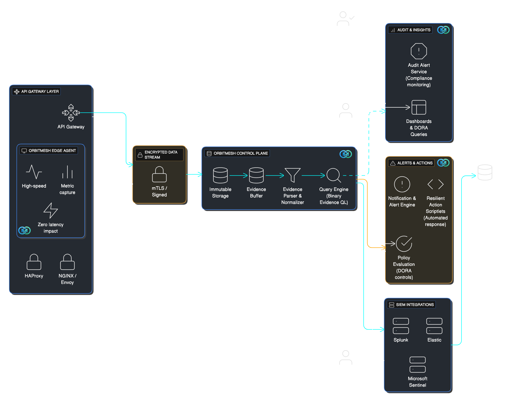

Your API Gateway’s "Black Box"
Proof of what was actually enforced — not just logged.
Immutable, tamper-evident evidence that auditors trust.
OrbitMesh captures audit-grade evidence of what your API gateway actually enforced, and ties every request to immutable configuration lineage. No traffic blocking. No routing changes. Just defensible truth.
The problem
Logs don’t prove enforcement — they only record events.
Auditors and risk teams need defensible proof that controls (like JWT, TLS, rate limits) were actually enforced on every request — not just sampled or guessed.
OrbitMesh bridges the "Accountability Gap" by sitting directly in the datapath to provide Runtime Attestation. Instead of an auditor asking for a manual sample, we provide an immutable, cryptographically-linked record of every request, proving that your security policy was enforced at the exact millisecond of execution.
Operational safety: If OrbitMesh or its exporter fails, traffic continues. Worst case is loss of evidence for that window — not downtime.
Audits need evidence
Prove TLS policy, JWT enforcement, route decisions, and outcomes at request time—without external guesswork.
Config truth is blurry
During incidents, teams can’t confidently answer what config was running and whether drift occurred.
SIEM is flooded
Raw access logs create volume without fidelity. OrbitMesh focuses on high-value enforcement facts.
Engineered for the 2026 Regulatory Storm
Built for audits, incidents, and regulatory reviews where proof of enforcement matters more than dashboards.
OrbitMesh is a detective evidence system: it does not prevent compromise, but makes tampering with evidence detectable and defensible.
Operational safety: If OrbitMesh or its exporter fails, traffic continues. Worst case is loss of evidence for that window — not downtime.
DORA — Article 17
Supports root-cause analysis by recording the gateway phase and specific backend instance involved in failures.
PCI-DSS 4.0 (10.2.x)
Captures user identifiers, source port, and success/failure indicators with PII-minimized evidence patterns.
SOC 2 effectiveness
Signed evidence that controls like rate limiting, JWT validation, and mTLS enforcement were active for evaluated traffic.
Supply chain & deployment integrity
Tracks config lineage and upstream service versions to detect drift and shadow deployments. Optional hooks for runtime SBOM attestation workflows.
Evidence integrity under breach
Hash-linked chain-of-custody makes deletion/reordering/modification detectable during audit or legal review.
Operational safety under pressure
Shallow vs deep streams reduce “data tsunami” risk during incidents while preserving high-fidelity forensics when anomalies occur.
OrbitMesh vs Legacy Approaches
Continuous, cryptographically provable enforcement evidence versus sampled, mutable logs.
| Audit & Incident Questions | Legacy Gateway Logs | Cloud Security Proxies | OrbitMesh |
|---|---|---|---|
| Can you prove controls were enforced for every request? | ❌ Sampled (1–5%) | ⚠️ Partial (mirrored traffic) | ✅ 100% request-time evidence |
| Is the evidence tamper-proof and auditor-defensible? | ❌ Mutable logs | ❌ SaaS-stored records | ✅ Append-only, tamper-evident |
| Does this impact production latency? | Low | High (5–20ms) | Near-zero (monitor-only, bounded) |
| Can you explain exactly what changed and when? | ⚠️ File-level only | ⚠️ Policy snapshots | ✅ Semantic config lineage |
| Is this suitable for regulatory audits? | Partial | Limited | Built for DORA, PCI-DSS 4.0, SOC 2 |
Sample Queries & Reports
Examples of the questions OrbitMesh enables across audits, monitoring, and rapid isolation.
Major Incident Evidence
Automated root-cause isolation for DORA Article 17 compliance.
Query
Generate a DORA Major Incident Report for last Tuesday's 5xx spike on the Payments Gateway.
Third-Party Risk Mapping
Identify every ICT provider and service version involved in performance degradations.
Query
Which third-party ICT providers were involved in the latency degradation on July 10th?
MTTR Resilience Audit
High-precision recovery window analysis across the entire API perimeter.
Query
Produce a 3-month resilience report showing Mean Time to Recovery (MTTR).
What makes these queries different?
Each result can be tied back to immutable config lineage (config_snapshot_id) and tamper-evident evidence (chain-of-custody). This is how you answer audit questions like "what was enforced at request time?" with confidence.
Integrations
SIEM-first, with standard ingestion paths.
OrbitMesh adds evidence; your SIEM remains the system of record for retention, search, and reporting.
How it works
1) Capture enforcement truth
TLS/mTLS details, JWT outcomes (reason codes), route match, upstream attempts, and phase-level timing.
2) Snapshot config lineage
Structured snapshots on reload/restart. Each request references a snapshot ID for “what was active then.”
3) Tamper-evident evidence
Hash linking makes deletion/reordering/modification detectable during audit or legal review.
Architecture (high level)
OrbitMesh is a low-level, C-based gateway agent built for correctness and minimal overhead. It writes fixed-size evidence records using non-blocking techniques and streams structured evidence to your existing collectors for archival and analysis.
FAQ
Clear boundaries (truthful positioning).
Operational safety: If OrbitMesh or its exporter fails, traffic continues. Worst case is loss of evidence for that window — not downtime.
Is OrbitMesh a WAF or prevention tool?
No. OrbitMesh is monitor-only. It does not block requests or modify routing. It produces evidence of enforcement and config lineage.
Why can’t logs or SIEMs already do this?
Logs record events after the fact. OrbitMesh records enforcement decisions at request time and makes them tamper-evident. This difference matters during audits and incident reviews.
What if the gateway host (or OrbitMesh) is compromised?
OrbitMesh is designed for detectability, not blind trust. Evidence is hash-linked and can be verified independently so deletion, reordering, or modification becomes detectable during audit, incident review, or legal discovery.
Do you store request/response payloads or secrets?
No. OrbitMesh records enforcement facts (e.g., TLS/JWT outcomes, route match, timing, upstream selection) rather than business payloads. Data capture is intentionally constrained to reduce PII/secret exposure while supporting audits and RCA.
How do we verify evidence months later?
Evidence can be validated using the tamper-evident chain and snapshot references without trusting dashboards or relying on sampled logs. Teams can run offline verification as part of audit preparation and retention workflows.
Do you provide resiliency / failover?
No. OrbitMesh does not provide traffic resiliency (failover, retries, routing decisions). It provides evidence integrity and forensic continuity under pressure.
How do you avoid impacting p99?
Design goal is minimal request-path work and predictable memory usage. Export can be buffered/batched and offloaded to a relay/collector depending on deployment.